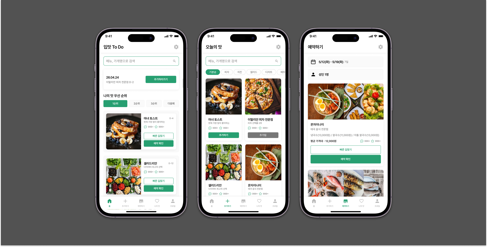

UI Practice
To Do List UI
할 일을 기록하고 확인하는 기본적인 투두리스트 화면을 모바일 UI로 구성한 연습 작업입니다. 사용자가 오늘 해야 할 일을 빠르게 확인하고, 완료 상태를 직관적으로 구분할 수 있도록 카드형 리스트와 명확한 버튼 구조를 중심으로 설계했습니다.
화면에서는 정보가 복잡하게 느껴지지 않도록 여백을 넉넉하게 두었고, 주요 행동 버튼은 시각적으로 잘 보이도록 배치했습니다. 작은 기능의 화면이라도 사용자가 무엇을 해야 하는지 쉽게 이해할 수 있는 구조를 만드는 데 초점을 두었습니다.
작업 유형
모바일 UI 연습
작업 기간
2026.05
사용 툴
Figma
다른 작업물 보기
가로로 스크롤해서 다른 연습 작업을 볼 수 있습니다.